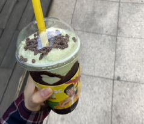
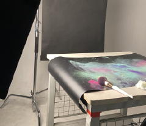
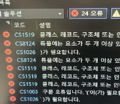

초코맛 음료가 먹고 싶어서 시켰던 음료입니다.
피스타치오 맛이나는 매우 맛없는 음료여서 다 먹기 정말 힘들었어요. 매우 비추천합니다.

광고사진 촬영 현장에서 찍은 사진입니다.
고속동조에 관한 촬영이었는데 파스텔이 흩날리는 순간을 담는 촬영이라 뒷정리가 매우 힘들었어요.

유니티를 실행하다가 무수한 오류를 발견하곤 맘이 힘들어져 찍은 사진입니다.
너무 힘들었던 과목이라 기억에 남는 것 같아요.